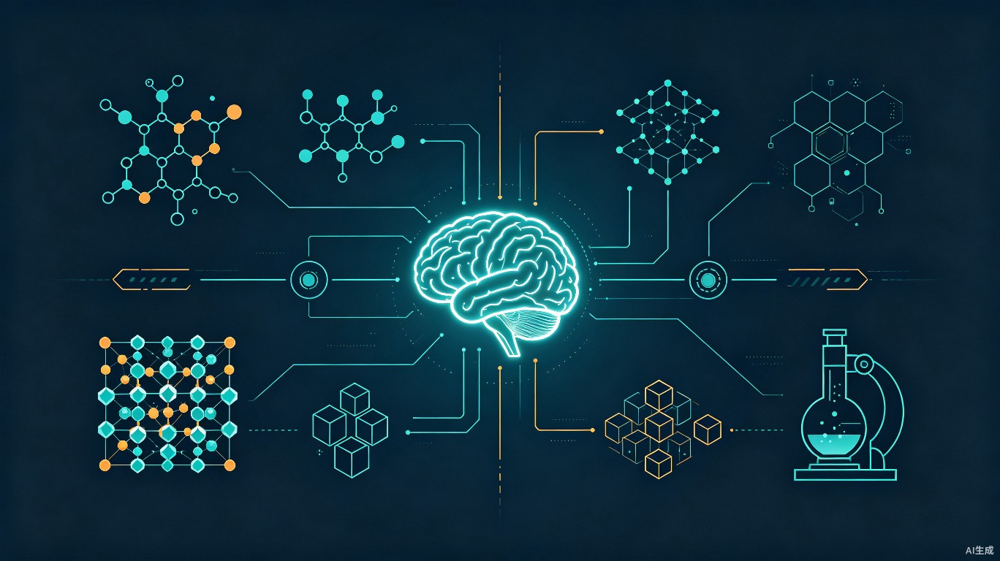

HuginnAgent 是一个面向材料科学研究的认知智能体系统。它不是一个简单的"LLM + 工具调用"框架，而是一个以 Loop Engineering（循环工程） 为核心设计哲学的人机协作科研自动化平台。
系统的核心信念是：科研自动化不是让 AI 全托管，而是让 对话、认知、记忆、知识、计划、任务 形成一个大循环，在这个循环上实现迭代进化。用户始终在环中——确认需求、审批计划、审查结果。
VASP、LAMMPS、Quantum ESPRESSO、CP2K、Gaussian、ORCA、GROMACS 全流程自动化，含收敛测试和物理审计。
SSH 隧道提交 SLURM/PBS 作业，自动状态轮询，结果回传。ComputeRouter 根据任务规模自动选择本地/HPC。
Materials Project、AFLOW、NOMAD、OQMD 多库联合检索，支持结构下载、性质查询、相图分析。
S0-S6 双螺旋认知状态机，在"发现链"（拉马努金式直觉探索）和"建造链"（布尔巴基式严格建构）之间动态切换。
L1 结构坐标在上下文压缩中存活，跨会话恢复认知状态和计划进度，不丢失科研上下文。
从工具失败/成功中自动提取规则和技能，持久化到 evolution_rules.json，后续调用自动注入经验教训。
HuginnAgent 的架构分为五层，从内到外依次是：认知核心、对话循环、工具体系、安全隔离、交互界面。
flowchart TB
subgraph UI["交互层"]
Desktop["桌面端 (Tauri/React)"]
CLI["CLI"]
REST["REST API"]
WS["WebSocket"]
end
subgraph Security["安全隔离层"]
Auth["JWT + RBAC 认证"]
Sandbox["沙箱执行器"]
RateLimit["三层限流"]
CircuitBreaker["熔断器"]
end
subgraph Core["认知核心层"]
CSM["认知状态机 S0-S6"]
Reflector["任务反思器"]
Evolution["进化引擎"]
Context["上下文构建器"]
Memory["记忆管理器"]
end
subgraph Tools["工具层"]
Sim["仿真工具 VASP/LAMMPS/QE..."]
Data["数据库 MP/AFLOW/NOMAD..."]
Search["搜索/文献"]
Code["代码执行"]
HPC["HPC 提交"]
end
UI --> Security --> Core --> Tools
Core -->|L1 坐标| Memory
Tools -->|结果| Reflector
Reflector -->|信号| CSM
CSM -->|注意力模式| Context
Evolution -->|规则注入| Context
| 模块 | 职责 | 关键文件 |
|---|---|---|
agent.py | 对话主循环，协调所有子系统 | 2588 行 |
cognitive_engine.py | S0-S6 状态机 + 双模注意力策略 | 480 行 |
session_state.py | 统一会话状态（认知模式、计划、L1坐标） | 180 行 |
reflection.py | 任务后反思器（零 LLM，纯规则） | 160 行 |
context_builder.py | 构建 LLM 输入（记忆+知识+计划+认知+进化） | 400 行 |
autoloop/engine.py | 自主循环引擎（计划→执行→验证→学习） | 2464 行 |
execution/orchestrator.py | 执行编排器 + ComputeRouter | 370 行 |
evolution/engine.py | 进化引擎（规则提取+技能学习） | 360 行 |
security/ | 认证、沙箱、限流、熔断、审计 | 6 模块 |
privacy/ | PII 扫描 + 密钥脱敏 | 2 模块 |
懒加载防循环引用：所有核心模块使用 from __future__ import annotations + 方法内延迟 import，模块边界清晰，无循环依赖。
优雅降级：所有外部调用（LLM、HPC、数据库）都有 try/except + 降级逻辑，单点故障不会崩溃整个系统。
对称设计：ModelRouter（选模型）↔ ComputeRouter（选算力），RedTeamReviewer（审质量）↔ PhysicsAuditor（审物理），形成完整的自动+人工审查双轨。
认知引擎是 HuginnAgent 区别于普通 AI Agent 的核心。它基于结构认知双螺旋模型，将认知过程分为两条链：
stateDiagram-v2
[*] --> S0
S0: S0 空白
S1: S1 发现
S2: S2 校验
S3: S3 切换
S4: S4 建造
S5: S5 统一
S6: S6 反馈
S0 --> S1: 用户提出目标
S1 --> S2: 生成假设
S1 --> S3: 用户确认
S2 --> S3: 校验通过
S2 --> S1: 校验失败
S3 --> S4: 确认执行
S3 --> S1: 用户拒绝
S4 --> S5: 计划完成
S4 --> S6: 工具失败/物理错误
S5 --> S1: 新问题
S5 --> S6: 发现缺口
S6 --> S0: 重置
S6 --> S1: 重新探索
每个状态映射到一种注意力模式，通过 prompt 工程实现——不同认知状态下，LLM 收到不同的注意力引导提示：
| 状态 | 注意力模式 | 引导方向 | 工具偏好 |
|---|---|---|---|
| S0/S1/S2 | 奇点凝聚 | "哪里在发光？" 检测模式、异常、结构共振 | 搜索、数据库、结构工具 |
| S3 | 模式切换 | 记录坐标，丢弃路径细节，切换到严格模式 | — |
| S4/S5 | 公理聚焦 | "哪里最薄弱？" 检测定义模糊、逻辑缺口、证明漏洞 | 仿真、收敛测试、物理审计 |
| S6 | 模式切换 | 识别缺口，记录失败点，准备重新探索 | — |
L1 坐标是双螺旋模型的核心创新——它是在上下文压缩中存活的结构位置标记。当对话历史被压缩时，不是保留原始 token，而是保留 L1 坐标：
# L1 坐标示例
exploring: calculate GaN bandgap | constructing: GaN bandgap, step 3
vasp_tool → converged, E=-3.5eV | GAP: physics error in vasp_toolL1 坐标在以下时刻更新：状态转移时、工具执行后、物理错误发生时。超过 500 字符自动截断，保留最近的坐标。
Loop Engineering 是 HuginnAgent 的设计哲学：对话、认知、记忆、知识、计划、任务不是独立模块，而是一个大循环中的环节。每个环节的输出都是下一个环节的输入。
flowchart LR
A[用户输入] --> B[认知状态机]
B -->|注意力模式| C[上下文构建]
C -->|注入记忆+知识+计划| D[LLM 推理]
D -->|工具调用| E[工具执行]
E -->|结果| F[任务反思]
F -->|失败/成功信号| G[进化引擎]
F -->|状态转移信号| B
F -->|计划进度| H[记忆持久化]
G -->|规则注入| C
H -->|跨会话恢复| C
B -->|L1坐标| H
当反思器检测到工具失败或物理错误时，系统会设置 pending_confirmation，暂停自主执行，等待用户决定是继续、调整还是重新规划。这确保了人始终在环中。
每个会话结束时，系统保存一个 snapshot，包含：认知状态（S0-S6）、L1 坐标、活跃计划 ID 和步骤。新会话启动时，自动恢复这些信息，让 agent "记住"上次在做什么。
plans.json），两个引擎可以接续同一个计划。
| 类别 | 工具 | 能力 |
|---|---|---|
| 第一性原理 | VASP | SCF/结构优化/能带/态密度/声子，PhysicsAuditor 自动检查正能量/假收敛/大磁矩 |
| Quantum ESPRESSO | SCF/能带/声子，兼容 PhysicsAuditor | |
| CP2K | 混合高斯平面波，大体系 DFT | |
| Gaussian / ORCA | 量子化学计算 | |
| 分子动力学 | LAMMPS | MD/NPT/NVT，PhysicsAuditor 检查温度/能量漂移/压力 |
| GROMACS | 生物分子 MD | |
| 有限元 | Abaqus | 力学/热学 FEM，支持 Python 脚本 |
| FEniCS / Elmer | 开源 FEM 求解器 | |
| 材料数据库 | Materials Project | 结构/性质/相图查询 |
| AFLOW / NOMAD | 多库联合检索 | |
| OQMD | 相图和形成能 | |
| 搜索与文献 | Web Search | DuckDuckGo 搜索（SSRF 防护） |
| Agentic Search | AI 增强搜索 + 全文抓取（SSRF 防护） | |
| Literature | arXiv/Crossref/OpenAlex/S2/PubMed（SSRF 防护） | |
| 分析与建模 | Interpretable ML | 符号回归 + 高斯过程 + SHAP |
| Bourbaki Tool | 形式化数学验证 (Lean 4) | |
| Active Learning | 主动学习采样 | |
| HPC | SSH Client | SLURM/PBS 提交，自动轮询，结果回传 |
ComputeRouter 与 ModelRouter 对称——ModelRouter 根据任务复杂度选择模型（便宜模型做摘要，强模型做推理），ComputeRouter 根据任务规模选择算力：
execution_backend 参数可直接指定HS256 签名，常数时间比较，支持 jti 撤销和 exp 过期验证。
普通 key + admin key，admin 端点（配置/HPC/凭证）需 admin 权限。
FastAPI 依赖注入，所有路由默认要求认证，仅 /health 公开。
HUGINN_DEV_MODE=1 会绕过所有认证（含 admin）。生产环境务必不设置此变量。
三层沙箱防护：
shell=True，工作目录限制，超时/输出限制rm -rf /、mkfs、fork bomb 等危险命令os/sys/subprocess/socket 导入和 eval/exec/open 调用可选 Docker 容器隔离：--network=none、--read-only、--user 1000、--cap-drop=ALL。
| 机制 | 覆盖范围 | 状态 |
|---|---|---|
| 密钥扫描 (SecretScanner) | 30+ 种 API key 模式（AWS/GCP/Azure/OpenAI 等） | 已集成 |
| PII 扫描 | 邮箱、电话、ORCID、身份证、手机号 | 已集成 |
| Fernet 加密存储 | SSH 密码、LLM API key | 已集成 |
| PBKDF2HMAC 配置加密 | 配置文件 (480K 迭代) | 已集成 |
| 审计日志 | 哈希链 + HMAC 签名 + 自动轮转 | 已集成 |
| 路径遍历防护 | 所有文件工具 relative_to 校验 | 已集成 |
| SSRF 防护 | local-models + agentic_search + 文献搜索 | 已集成 |
| 本地数据驻留 | 用户数据全部存储在本地 (SQLite/JSONL) | 默认 |
双层熔断器保护系统稳定性：
| 层级 | 默认值 | 作用域 | 说明 |
|---|---|---|---|
| 单轮上限 | 100,000 tokens | per-session | 防止单轮对话消耗过多 |
| 秒级速率 | 5,000 tokens/s | per-session 滑动窗口 | 防止突发请求压垮 API |
| 总成本上限 | $10 USD | 全局共享 | 硬性成本天花板 |
上下文使用率超过 70% 时自动触发压缩。压缩时保留：
对标产业级验收标准，从 7 个维度进行了全面审查。以下为审查结果汇总：
| 维度 | CRITICAL | HIGH | MEDIUM | LOW | 状态 |
|---|---|---|---|---|---|
| 代码质量 | 0 | 0 | 1 | 2 | 通过 |
| 安全风险 | 0 | 0 | 3 | 2 | 通过 |
| 本地隐私 | 0 | 0 | 1 | 0 | 通过 |
| 风险隔离 | 0 | 0 | 2 | 1 | 通过 |
| 成本控制 | 0 | 0 | 1 | 0 | 通过 |
| 可维护性 | 0 | 0 | 2 | 1 | 通过 |
| 版本控制 | 0 | 0 | 0 | 0 | 优秀 |
except Exception: pass 静默异常（建议逐步替换为 logger.debug）与 HuginnAgent 交互就像与一个有材料科学背景的研究助手对话。系统会自动判断你的问题属于探索阶段还是执行阶段，并切换到相应的认知模式。
# 启动 agent
python -m huginn serve # Web UI
python -m huginn chat # CLI
# 基本对话
用户: "帮我计算 GaN 的带隙"
Agent: [进入发现模式] 我建议用 VASP PBE 泛函计算...
用户: "好的，按你的方案执行"
Agent: [进入建造模式] 正在构建结构... 执行 SCF..."计算 GaN 的带隙" 比 "看看 GaN" 更容易触发正确的认知模式。系统会根据你的描述判断是探索还是执行。
当工具失败或物理审计发现异常时，系统会暂停并询问你。这是人机协作的关键时刻——你的决定会影响后续认知状态。
直接说"继续上次的计算"，系统会自动恢复上次的认知状态、L1 坐标和计划进度。
大体系计算（>100 原子）会自动路由到 HPC。你也可以显式指定："用 HPC 跑这个 VASP"。
系统会根据对话内容自动在两种模式间切换，你也可以主动引导：
# 生产环境必设
HUGINN_API_KEY=your-strong-key # API 认证
HUGINN_ADMIN_KEY=your-admin-key # 管理端点
HUGINN_JWT_SECRET=your-jwt-secret # JWT 签名（不要复用 API key）
# HUGINN_DEV_MODE= # 不设置！生产环境禁用
# 可选安全加固
HUGINN_DOCKER_SANDBOX=1 # 启用容器隔离
HUGINN_CORS_ORIGINS=https://your-domain # 生产域名
# HUGINN_ALLOW_UNRESTRICTED_READ= # 不设置！禁止任意文件读取
# HUGINN_RATE_LIMIT_ENABLED=false # 不设置！保持限流开启HUGINN_CACHE_DIR 指向了不同的目录。
/credentials 端点），SSH 连接是否通畅，以及是否触发了速率限制（每分钟 10 次）。
evolution_rules.json。